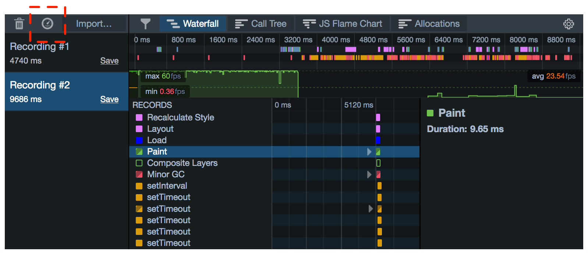
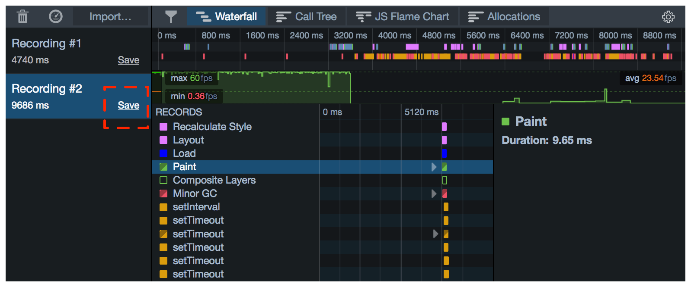
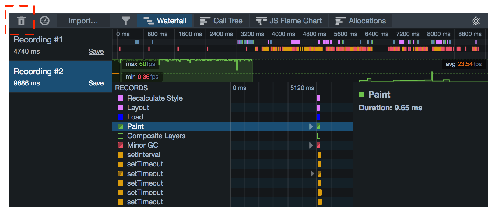
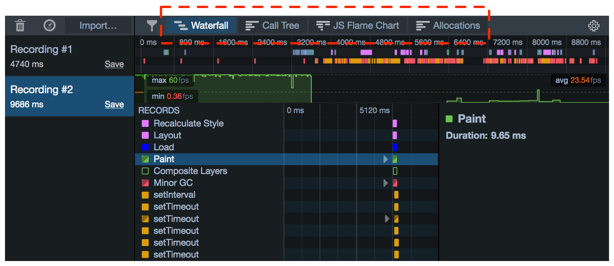
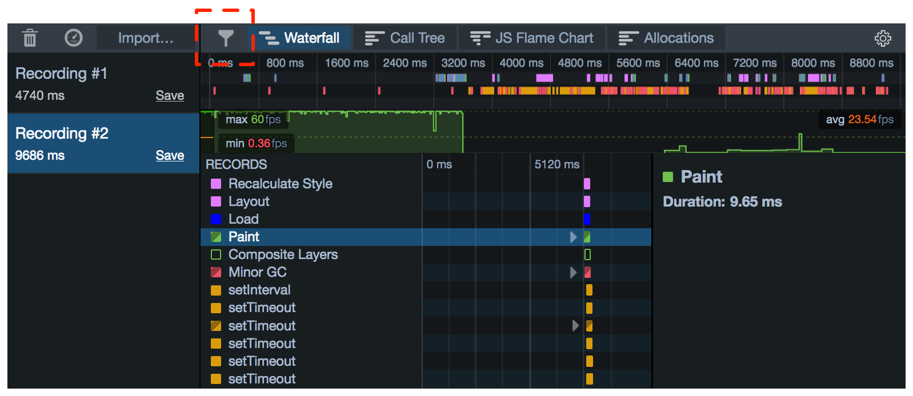
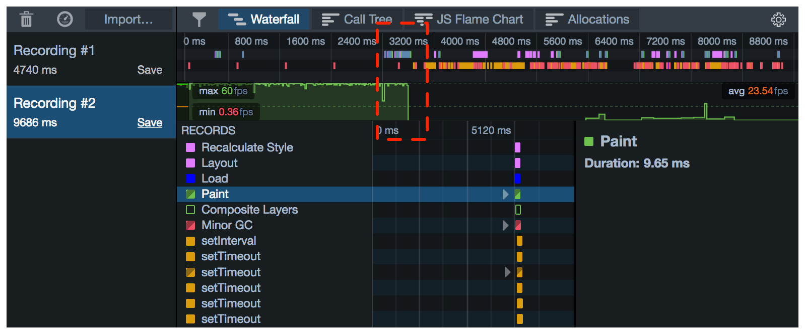

To open the Performance tools:
To start a new recording, press the stopwatch icon in the Recordings pane. To stop, press it again:

You can also start and stop recording from the Web Console, using console.profile() and console.profileEnd().
To save a profile, click the link labeled "Save" in the Recordings pane:

To load a profile, click "Import..." and choose the file:
To clear all loaded profiles, click "Clear".
If you do this, you'll lose any loaded profiles that you have not saved.

To switch between the Waterfall, Call Tree, and Flame Chart tools, use the buttons in the toolbar:

To control which markers are shown in the Waterfall, use the button in the toolbar:

To zoom into a slice of the recording, select that slice in the recording overview:
